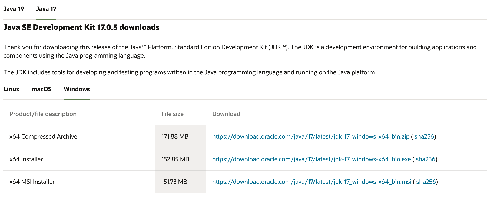
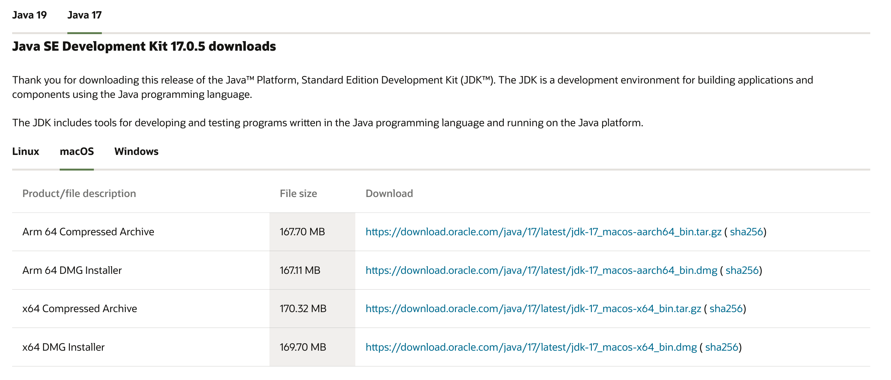
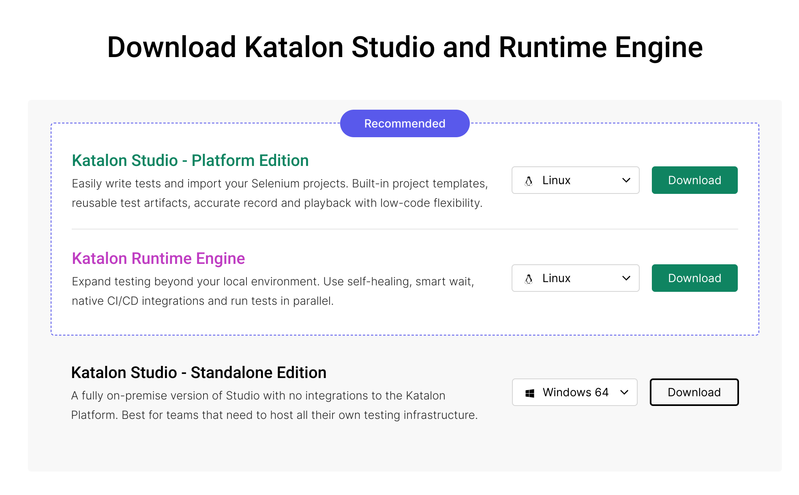
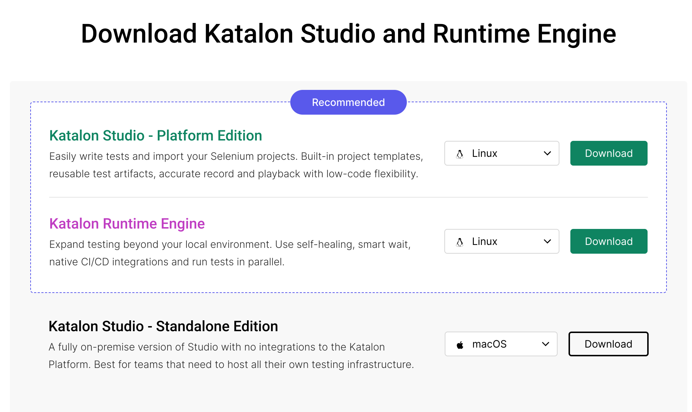
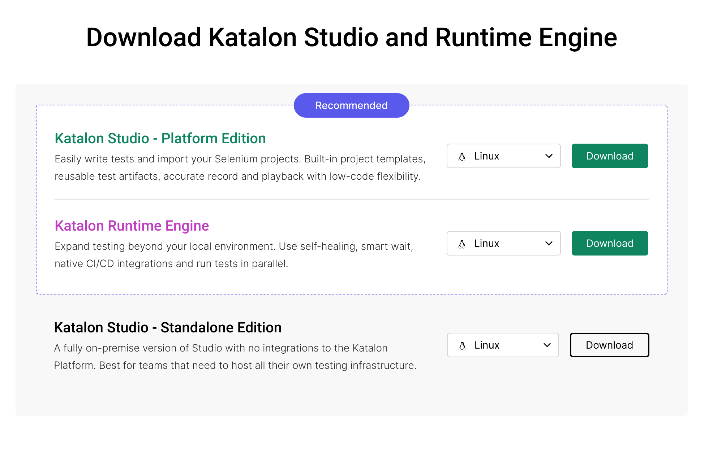
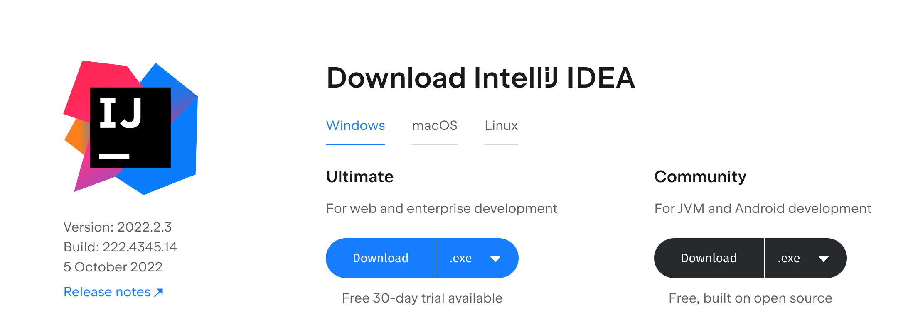
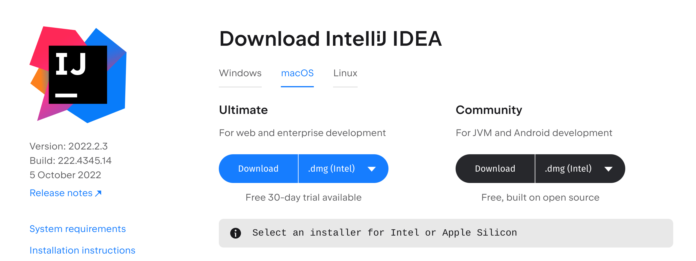
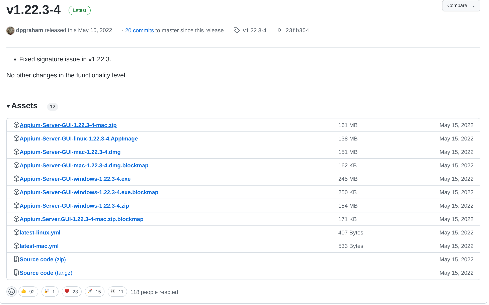
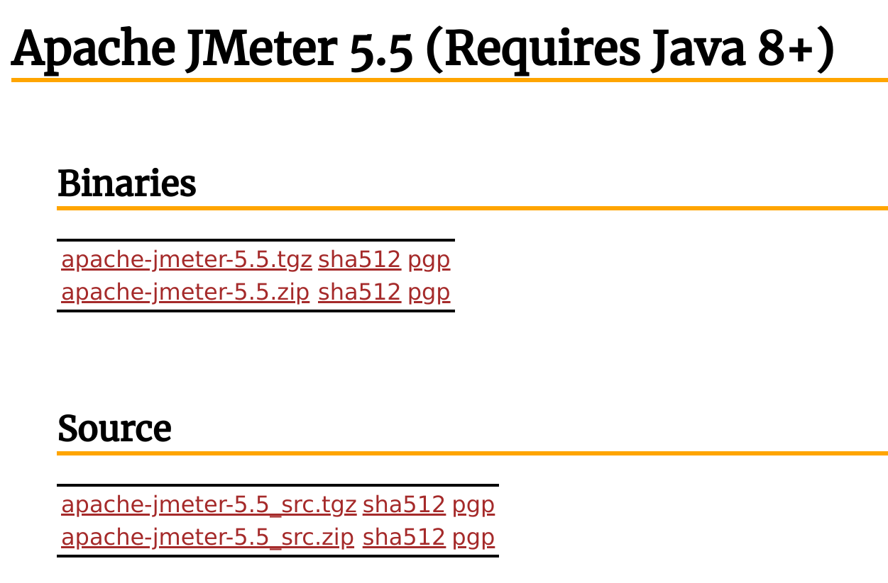

Java
Windows
Pergi ke https://www.java.com/en/download/manual.jsp dan pilih installer.

Setelah download selesai, instal dengan double-click installer tersebut. Ikuti langkah hingga selesai.

Untuk menambahkan PATH, lihat artikel berikut How to Install Java on Windows {Step-by-Step Guide}
Mac
Pergi ke https://www.java.com/en/download/manual.jsp dan pilih DMG installer.

Setelah download selesai, instal dengan double-click installer tersebut. Ikuti langkah hingga selesai.

Set JAVA_HOME menggunakan perintah berikut.
export JAVA_HOME=/Library/Java/Home
Linux
Install menggunakan perintah berikut.
sudo apt update sudo apt-get install openjdk-8-jdk -ySet JAVA_HOME menggunakan perintah berikut.
export JAVA_HOME=/usr/lib/jvm/java-8-openjdk-amd64/
Katalon
Windows
Klik link download Katalon di Katalon Studio Free Download | Katalon lalu pilih Standalone Edition.

Setelah mendownload, lakukan extract lalu buka katalon.exe.

Mac
Klik link download Katalon di Katalon Studio Free Download | Katalon lalu pilih Standalone Edition.

Setelah mendownload, double-click untuk membuka installer. Tunggu proses sampai selesai

Linux
Klik link download Katalon di Katalon Studio Free Download | Katalon lalu pilih Standalone Edition.

Setelah mendownload, lakukan extract lalu buka katalon.

IntelliJ IDEA
Windows
Download Installer di Download IntelliJ IDEA: The Capable & Ergonomic Java IDE by JetBrains dengan versi Community.

Ikuti langkah langkah instalasi hingga selesai.
Mac
Download Installer di Download IntelliJ IDEA: The Capable & Ergonomic Java IDE by JetBrains dengan versi Community.

Ikuti langkah langkah instalasi hingga selesai.
Linux
Install dengan command berikut.
sudo snap install intellij-idea-community --classic
Selenium WebDriver
| Web Browser | Download Link |
|---|---|
| Chromium/Chrome | Download |
| Firefox | Download |
| Edge | Download |
| Internet Explorer | Download |
| Safari | Built-in |
| Opera | Download |
Atau untuk lebih lengkapnya bisa mampir ke dokumentasi resmi Selenium di sini.
Cucumber Plugin
Enable plugin Cucumber pada IntelliJ menggunakan langkah berikut.
Buka setting dengan kombinasi
Ctrl+Alt+S.Install plugin berikut dengan urutan:

Gherkin
Cucumber for Java
Cucumber for Groovy
Restart IntelliJ
Robot Framework Plugin
Enable plugin Robot Framework pada IntelliJ menggunakan langkah berikut.
Buka setting dengan kombinasi
Ctrl+Alt+S.Install plugin berikut dengan urutan:
- Robot Plugin
Restart IntelliJ
Postman
Windows
Download Installer di Download Postman
Ikuti langkah instalasi hingga selesai
Mac
Download Installer di Download Postman
Ikuti langkah instalasi hingga selesai
Linux
Instal menggunakan perintah berikut.
sudo snap install postman
Appium
Download Appium Desktop di https://appium.io/downloads.html dan pilih sesuai platform OS masing masing.

JMeter
Windows, Mac, & Linux
Download jmeter di https://jmeter.apache.org/download_jmeter.cgi. Pilih bagian binaries.

Extract jmeter.
Lalu jalankan file jmeter.